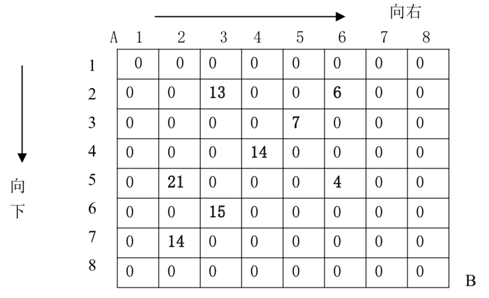

设有 $N \times N$ 的方格图（$N \le 10$），我们将其中的某些方格中填入正整数，而其他的方格中则放入数字 0。如下图所示（见样例）：

某人从图的左上角的 A 点出发，可以向下行走，也可以向右走，直到到达右下角的 B 点。在走过的路上，他可以取走方格中的数（取走后的方格中将变为数字 0）。
此人从 A 点到 B 点共走两次，试找出 2 条这样的路径，使得取得的数之和为最大。
第一行为一个整数 $N$（表示 $N \times N$ 的方格图），接下来的每行有三个整数，前两个表示位置，第三个数为该位置上所放的数。一行单独的 0 表示输入结束。
只需输出一个整数，表示 2 条路径上取得的最大的和。
8 2 3 13 2 6 6 3 5 7 4 4 14 5 2 21 5 6 4 6 3 15 7 2 14 0 0 0
67
 Comet OJ
Comet OJ